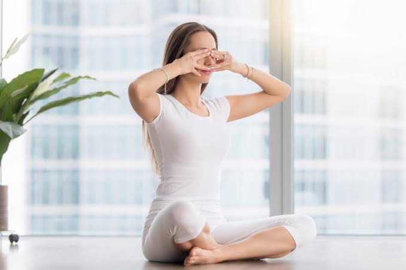

Bhramari Pranayama Steps
1.Choose a peaceful and clean surrounding to practise this pranayama
2.Keeping your back straight, close your eyes and focus on your breathing
3.Gently press your earlids using thumbs.
4.Place both your index fingers on forehead and the remaining fingers on eyelids.
5.Now breathe in deeply through both the nostrils. And as you breathe out, produce a humming sound without opening your mouth.
6.Feel the vibrations in the jaw, lips and throat.